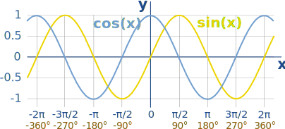
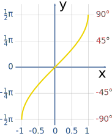
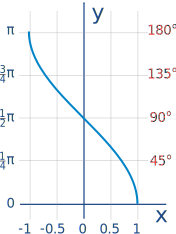
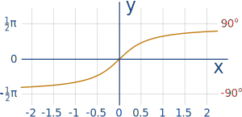
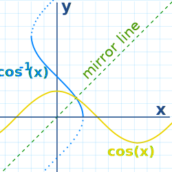

Graphs of Sine, Cosine and Tangent
A sine wave made by a circle:
A sine wave produced naturally by a bouncing spring:
Plot of Sine

The Sine Function has this beautiful up-down curve (which repeats every 2π radians, or 360°).
It starts at 0, heads up to 1 by π/2 radians (90°) and then heads down to −1.
Plot of Cosine

Cosine is just like Sine, but it starts at 1 and heads down until π radians (180°) and then heads up again.
Plot of Sine and Cosine

In fact Sine and Cosine are like good friends: they follow each other, exactly π/2 radians (90°) apart.
Plot of the Tangent Function

The Tangent function has a completely different shape ... it goes between negative and positive Infinity, crossing through 0, and at every π radians (180°), as shown on this plot.
At π/2 radians (90°), and at −π/2 (−90°), 3π/2 (270°), etc, the function is officially undefined, because it could be positive Infinity or negative Infinity.
Inverse Sine, Cosine and Tangent
The Inverse Sine, Cosine and Tangent graphs are:

Inverse Sine

Inverse Cosine

Inverse Tangent
Mirror Images
Here is Cosine and Inverse Cosine plotted on the same graph:

Cosine and Inverse Cosine
They are mirror images (about the diagonal)!
The same is true for Sine and Inverse Sine and for Tangent and Inverse Tangent. Can you see this in the graphs above?